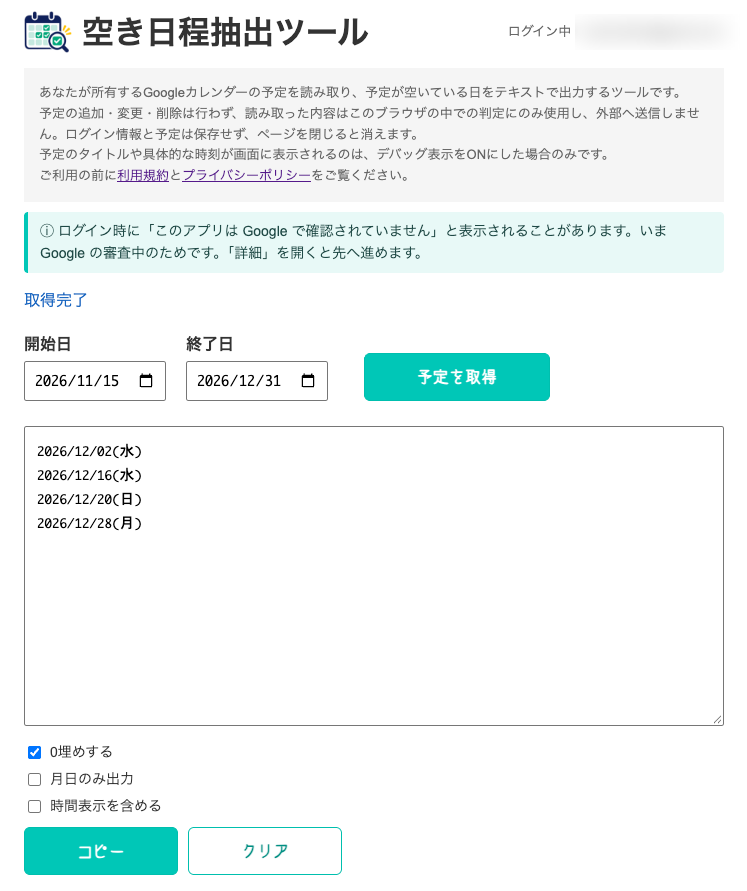

実際の画面

「コピー」を押すと、こう貼れます
2026/12/02(水) 2026/12/16(水) 2026/12/20(日) 2026/12/28(月)
日程調整ツールの候補日の欄に、そのまま貼り付けられます。「月日のみ出力」で 12/02(水)、「時間表示を含める」で 2026/12/02(水) 13:00〜 のように開始時刻付きにもできます。
できること
昼と夜で空きを判定
昼（13:00〜18:00）と夜（21:00〜24:00）の予定を見て、どちらかが空いている日を候補にします。時間帯は変えられます。
貼りやすい形で出力
日程調整ツールの候補日に貼れる形で、日付を1行ずつ並べます。0埋め・年の有無・開始時刻の有無を選べます。
カレンダーを外せる
判定に使わないカレンダーを指定できます。ToDo リストはいつも外します。
理由を確かめられる
デバッグ表示をオンにすると、どの予定でその日が外れたかを確かめられます。
判定のルール
| 昼 | 夜 | 判定 |
|---|---|---|
| 空き | 空き | 候補にする |
| 予定あり | 空き | 候補にする |
| 空き | 予定あり | 候補にする |
| 予定あり | 予定あり | 外す |
| 終日の予定あり | 外す | |
時間帯に重なっている予定だけを判定に使います。検索できる期間は最大180日です。
安全性について
- 予定は読み取るだけです。予定の作成・変更・削除はできません。
- 予定の取得と判定は、すべて使っている人のブラウザの中で行います。予定を作者や他のサーバーに送ることはなく、アクセス解析も使っていません。
- ログインの情報は保存しません。ページを閉じると消えます。
- 予定のタイトルや時刻が画面に出るのは、デバッグ表示をオンにしたときだけです。
ログインのときに「このアプリは Google で確認されていません」と出ることがあります。いま Google の審査中のためです。「詳細」を開くと先へ進めます。利用規約とプライバシーポリシーもご覧ください。
はじめかた
- 空き日程抽出ツールを開く
- 「Google でログイン」を押して、使うアカウントを選ぶ
- カレンダーの読み取りを許可する
- 期間を選んで「予定を取得」を押し、出てきた日をコピーする
作った経緯と使い方は note 記事 に、自分の Google Apps Script で動かす方法は GitHub の README にまとめています。
質問・不具合の報告
分かりにくいところや動かないところがあれば、GitHub の Issue で気軽に教えてください。